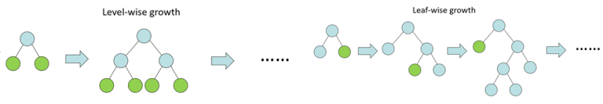
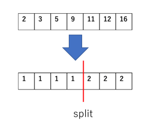
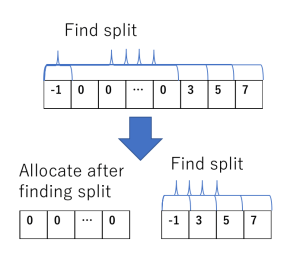
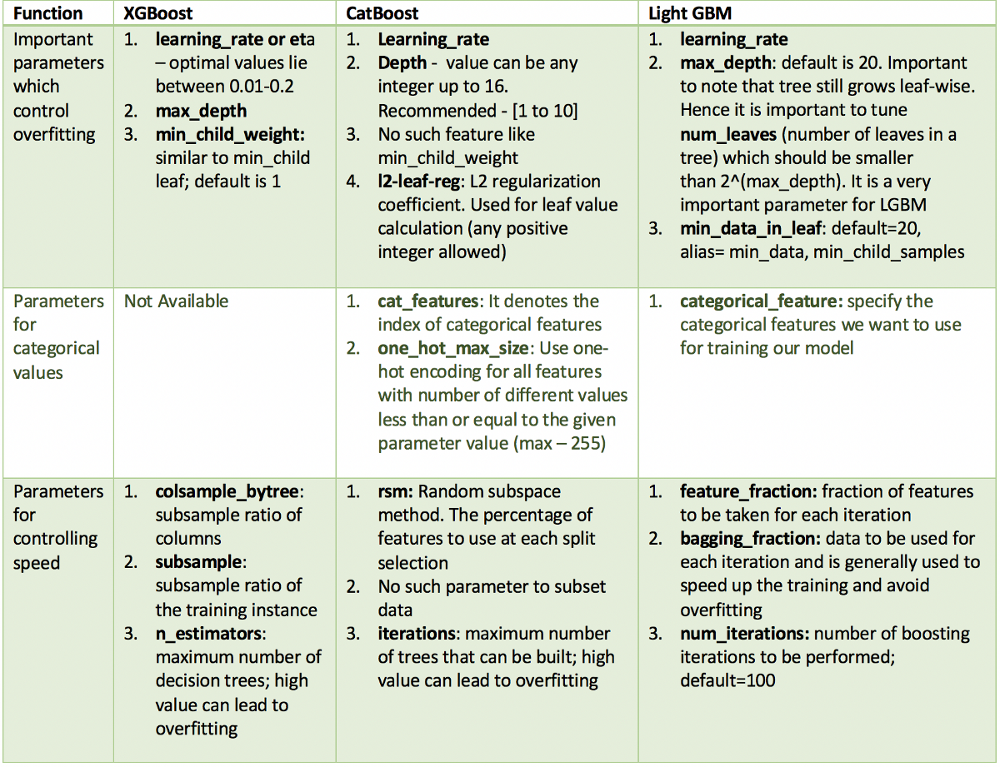
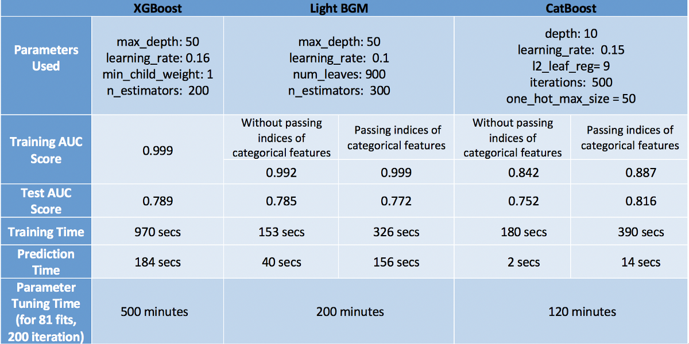

The main differences between the 3 famous boosting tree algorithms
Level-wise VS Leaf-wise
Level-wise
Leaf-wise
What the key challenge in training a GBDT?
Finding the best split for each leaf is the key challenge
xgboost and lightGBM present are methods of finding the approximate best split
Two key common features of XGBoost and LightGBM
Histogram-based methods
Ignoring sparse inputs
Gradient-based One-Side Sampling (lightGBM)
LightGBM increases the weight of the samples with small gradients when computing their contribution to the change in loss
Exclusive Feature Bundling (lightGBM)
How catboost treats Categorical Variables?
$\hat{x}_k^i \approx \mathbb{E}(y|x^i=x_k^i)$
The process goes like this:
Permuting the set of input observations in a random order. Multiple random permutations are generated
Converting the label value from a floating point or category to an integer
All categorical feature values are transformed to numeric values using the following formula: $$avg\_target=\frac{countInClass+prior}{totalCount+1}$$
How LightGBM treats Categorical Variables
Similar to CatBoost, LightGBM can also handle categorical features by taking the input of feature names
LGBM uses a special algorithm to find the split value of categorical features
Grouping on maximum homogeneity:
$K$ elements, each assigned a weight $w_i$ and a numerical measure $a_i$, given a positive integer less than $K$, grouping the $K$ elements to $G$ subsets, try to minimize $$D=\sum_{i=1}^{K}w_i(a_i-\bar{a_i})^2$$
Parameters
Performance
